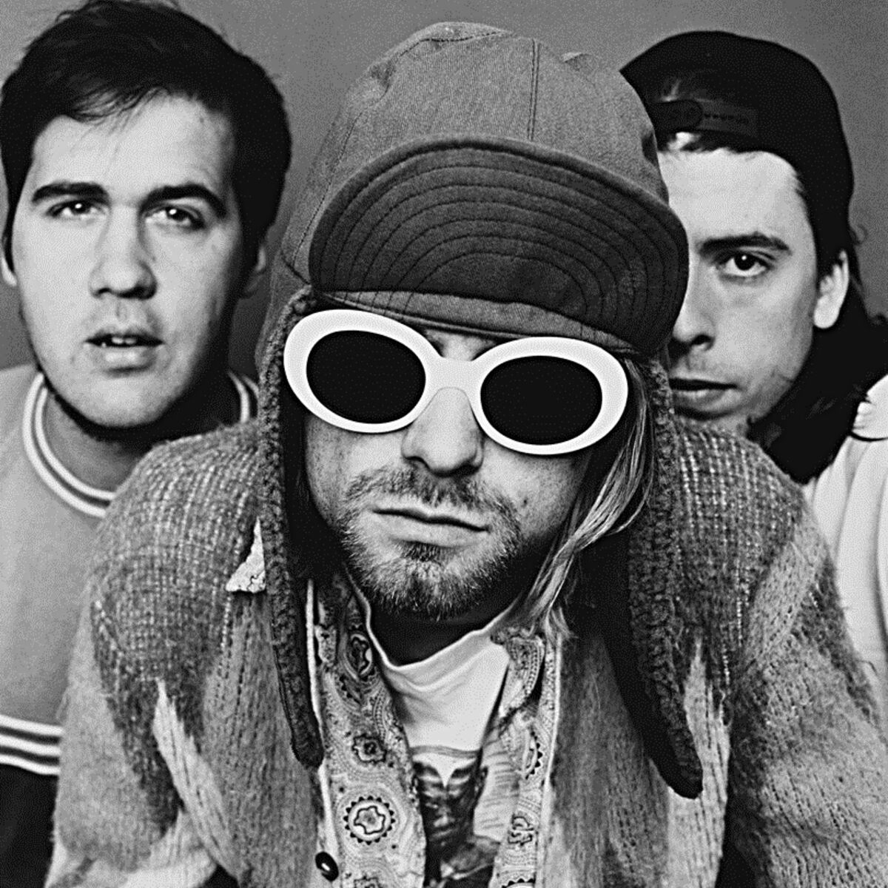

Nirvana helped redefine rock music in the early 1990s, combining raw punk energy
with memorable melodies and Kurt Cobain's distinctive songwriting. Their breakthrough
album Nevermind remains one of the most influential rock albums of its era, while In Utero
offers a darker, more abrasive sound. MTV Unplugged in New York is another essential listen,
showcasing the band's songs in a remarkably intimate setting.

The Flaming Lips are known for their psychedelic, experimental approach to rock, combining
strange sounds, ambitious concepts, humor, and surprisingly emotional songwriting. The Soft Bulletin
is often considered their masterpiece, while Yoshimi Battles the Pink Robots is perhaps their most
accessible and widely celebrated album. For an earlier taste of their more chaotic side,
Clouds Taste Metallic is also worth exploring.
Radiohead evolved from an alternative rock band into one of the most adventurous and influential groups
of the modern era. OK Computer is widely regarded as a landmark album, blending rock with electronic experimentation
and themes of technology and alienation. Kid A pushed even further into electronic and experimental territory,
while In Rainbows is celebrated for its warmth, songwriting, and beautifully balanced production.
©Thomas-Scott Howes. All Rights Reserved,2026.
This place rocks Utah State